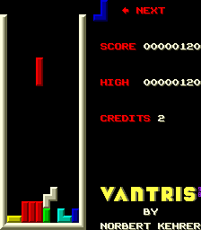

Download vantris.zip and play it with the MAME emulator. The distribution contains the ROM binaries (MAME naming conventions), installation instructions, and the source code.
Here is a screenshot of the running game:

It is great fun to program these old arcade machines - well at least their emulators ;-) Try it, too.
My next project is a Bust-a-move/Puzzle Bobble clone for the Gravitar arcade machine (Atari 1982) - a vector machine. This is a nice programming challenge, but hard work. I have a version with the balls flying around now, but there is still much to do. It will take some time, but one day I will finish it ("...because this is better than writing emulators" I say in January 2001).